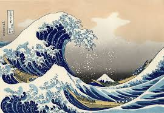
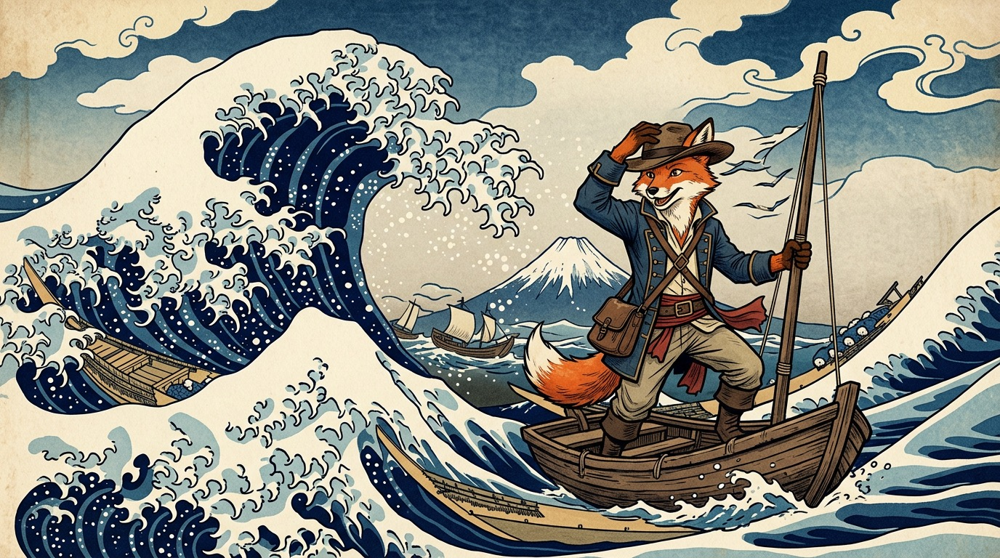

Le tableau "La Grande Vague de Kanagawa" ou "La Vague" de Hokusai a été peint en 1830, ce dernier a été réalisé au Japon, ce tableau est une estampe ukiyo-e désignant les images d'un monde éphémère et flotant, cette dernière est imprimée sur papier, à l'aide de gravures sur bois réalisées par un graveur expérimenté. Possédant de multiples planches de couleurs elle appartient à la catégorie des "estampes de brocart" ( Nishiki-e ), en japonais. Ce tableau représente le Mont Fuji encadré par une scène où les vagues déferlent sur les pêcheurs agrippés à leurs rames . Ces dernières paraissent plus imposantes que la montagne elle-même. Par ce jeu de perspective, Hokusai a peut-être voulu exprimer la crainte et le respect que l'océan inspire.

C'est l'histoire d'un renard,nommé Loki et passionné d'aventures. Il pris un jour la décision de partir en mer en quête de gloire et de pouvoir, son but étant de trouver une Île peuplée de créatures magnifiques et légendaires, contenant des éspèces maritimes et terrestres jamais vu auparavant. Ce territoire se nommait All-Blue, une légende raconte qu'un ermite nommé Polunga vivrait au sommet du mont Myoboku, la plus haute montagne de l'Île et qu'il exaucerait n'importe quels voeux à qui saurai le vaincre en duel. Attention !! Loki à ce qu'on dit cet homme n'as pas été vaincu depuis 800 ans.